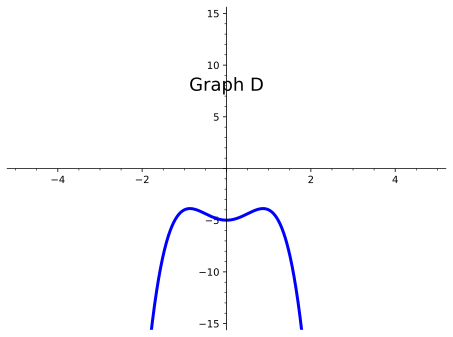
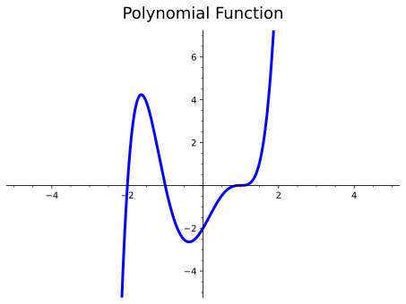

Find the intercepts, estimated locations of maxima and minima, and end behavior of a polynomial function, and use this information to sketch the graph.
Subsection1.5.1Activities
Observation1.5.1.
Just like with quadratic functions, we should be able to determine key characteristics that will help guide us in creating a sketch of any polynomial function. We can start by finding both \(x \) and \(y \)-intercepts and then explore other characteristics polynomial functions can have.
Remark1.5.2.
Recall that the zeros of a function are the \(x\)-intercepts - i.e., the values of \(x\) that cross or touch the \(x\)-axis. Just like with quadratic functions, we can find the zeros of a function by setting the function equal to \(0\) and solving for \(x\text{.}\)
Activity1.5.3.
Given the function, \(f(x)=(x-2)(x+1)(x-3)^2 \text{,}\) determine the following characteristics.
(a)
How many zeros does \(f(x) \) have?
\(\displaystyle 1 \)
\(\displaystyle 2 \)
\(\displaystyle 3 \)
\(\displaystyle 4 \)
(b)
What are the zeros of \(f(x) \text{?}\)
\(\displaystyle 1, 2, 3 \)
\(\displaystyle -1, 2, 3 \)
\(\displaystyle 1, -2, -3 \)
\(\displaystyle -1, 2, -3 \)
(c)
What is the \(y\)-intercept of \(f(x) \text{?}\)
\(\displaystyle -1 \)
\(\displaystyle -6 \)
\(\displaystyle 6 \)
\(\displaystyle -18 \)
(d)
Now that we have found both the \(x\) and \(y\)-intercepts of \(f(x)\text{,}\) do we have enough information to draw a possible sketch of \(f(x)\text{?}\) What other characteristics would be useful to help us draw an accurate sketch of \(f(x) \text{?}\)
Activity1.5.4.
Let’s now look at the graph of \(f(x)=(x-2)(x+1)(x-3)^2\) to answer the questions below.
Figure1.5.5.
(a)
What are the zeros of \(f(x) \text{?}\)
\(\displaystyle 1, 2, 3 \)
\(\displaystyle -1, 2, 3 \)
\(\displaystyle 1, -2, -3 \)
\(\displaystyle -1, 2, -3 \)
(b)
Describe the behavior at each zero. What do you notice?
Definition1.5.6.
The multiplicity of a polynomial function is the number of times a given factor appears in the factored form of the equation of a polynomial.
The zero, \(x=3\) in Activity 1.5.4 has multiplicity \(2\) because the factor \((x−3)\) occurs twice (the exponent is a \(2\)).
NEED ANOTHER MULTIPLICITY ACTIVITY and need to address max/min.
Definition1.5.7.
The end behavior of a polynomial function describes the behavior of the graph at the "ends" of the function. In other words, as we move to the right of the graph (as the \(x\) values increase), what happens to the \(y \) values? Similarly, as we move to the left of the graph (as the \(x\) values decrease), what happens to the \(y \) values?
Activity1.5.8.
Use the graphs of the following polynomial functions to answer the questions below.
(a)
How would you describe the behavior of Graph A as you approach the ends?
Graph A rises on the left and on the right.
Graph A rises on the left, but falls on the right.
Graph A rises on the right, but falls on the left.
Graph A falls on the left and on the right.
(b)
How would you describe the behavior of Graph B as you approach the ends?
Graph B rises on the left and on the right.
Graph B rises on the left, but falls on the right.
Graph B rises on the right, but falls on the left.
Graph B falls on the left and on the right.
(c)
How would you describe the behavior of Graph C as you approach the ends?
Graph C rises on the left and on the right.
Graph C rises on the left, but falls on the right.
Graph C rises on the right, but falls on the left.
Graph C falls on the left and on the right.
(d)
How would you describe the behavior of Graph D as you approach the ends?
Graph D rises on the left and on the right.
Graph D rises on the left, but falls on the right.
Graph D rises on the right, but falls on the left.
Graph D falls on the left and on the right.
Definition1.5.9.
Typically, when given an equation of a polynomial function, we look at the degree and leading coefficient to help us determine the behavior of the ends. The degree is the highest exponential power in the polynomial. The leading coefficient is the number written in front of the variable with the highest exponential power.
Activity1.5.10.
Let’s refer back to the graphs in Activity 1.5.8 and look at the equations of those polynomial functions. Let’s apply Definition 1.5.9 to see if we can determine how the degree and leading coefficients of those graphs affect their end behavior.
Graph A: \(f(x)=-11x^3+32+42x^2+x^4-64x\)
Graph B: \(g(x)=2x^2+3-4x^3\)
Graph C: \(h(x)=x^7+2x^3-5x^2+2\)
Graph D: \(j(x)=3x^2-2x^4-5\)

(a)
What is the degree and leading coefficient of Graph A?
Degree: \(-64\text{;}\) Leading Coefficient: \(4\)
Degree: \(4\text{;}\) Leading Coefficient: \(0\)
Degree: \(1\text{;}\) Leading Coefficient: \(-64\)
Degree: \(4\text{;}\) Leading Coefficient: \(1\)
(b)
What is the degree and leading coefficient of Graph B?
Degree: \(3\text{;}\) Leading Coefficient: \(-4\)
Degree: \(-4\text{;}\) Leading Coefficient: \(3\)
Degree: \(2\text{;}\) Leading Coefficient: \(3\)
Degree: \(3\text{;}\) Leading Coefficient: \(4\)
(c)
What is the degree and leading coefficient of Graph C?
Degree: \(-5\text{;}\) Leading Coefficient: \(2\)
Degree: \(0\text{;}\) Leading Coefficient: \(7\)
Degree: \(-5\text{;}\) Leading Coefficient: \(3\)
Degree: \(7\text{;}\) Leading Coefficient: \(1\)
(d)
What is the degree and leading coefficient of Graph D?
Degree: \(-2\text{;}\) Leading Coefficient: \(4\)
Degree: \(3\text{;}\) Leading Coefficient: \(2\)
Degree: \(-2\text{;}\) Leading Coefficient: \(4\)
Degree: \(-5\text{;}\) Leading Coefficient: \(4\)
(e)
Notice that Graph A and Graph D have their ends going in the same direction. What conjectures can you make about the relationship between their degrees and leading coefficients with the behavior of their graphs?
(f)
Notice that Graph B and Graph C have their ends going in opposite directions. What conjectures can you make about the relationship between their degrees and leading coefficients with the behavior of their graphs?
Remark1.5.11.
From Activity 1.5.10, we saw that the degree and leading coefficient of a polynomial function can give us more clues about the behavior of the function. In summary, we know:
If the degree is even, the ends of the polynomial function will be going in the same direction. If the leading coefficient is positive, both ends will be pointing up. If the leading coefficient is negative, both ends will be pointing down.
If the degree is odd, the ends of the polynomial function will be going in opposite directions. If the leading coefficient is positive, the left end will fall and the right end will rise. If the leading coefficient is negative, the left end will rise and the right end will fall.
Definition1.5.12.
When describing end behavior, mathematicians typically use arrow notation. Just as the name suggests, arrows are used to indicate the behavior of certain values on a graph.
For end behavior, students are often asked to determine the behavior of \(y\)-values as \(x\)-values either increase or decrease. The statement "As \(x\to \infty\text{,}\)\(f(x)\to -\infty\)" can be translated to "As \(x\) approaches infinity (or as \(x\) increases), \(f(x)\) (or the \(y\)-values) go to negative infinity (i.e., it decreases)."
Activity1.5.13.
Sketch the function, \(f(x)=(x-2)(x+1)(x-3)^2 \text{,}\) by first finding the given characteristics.
Find the zeros of \(f(x)\text{.}\)
Find the \(y\)-intercept of \(f(x)\text{.}\)
Describe the end behavior of \(f(x)\text{.}\)
Identify where any local maximums and minimums may occur.
***DOES THIS GO HERE???**** A polynomial function is a function that can be expressed in the form of a polynomial. Just like other functions, polynomial functions have many different features. Before we can begin to look at how polynomial functions can be used, we must first be able to identify what makes a polynomial function and what typical characteristics they have.
Activity1.5.14.
Some of the graphs shown below are polynomial functions and some are not. Use the following graphs to explore the charactertistics of polynomials.

(a)
By looking at the graphs that are labeled "NOT a Polynomial Function," what type of characteristics do you notice? How are these different from the graphs labeled as being polynomial functions?
(b)
Can you make any conjectures about what characteristics all polynomials have based on what you see on these graphs?
Remark1.5.15.
There are two primary characteristics we typically use to distinguish polynomial functions from other functions. Polynomial functions have graphs that are smooth and continuous. Smooth functions are functions that contain only rounded curves (no sharp corners). Continuous functions are functions that can be drawn without lifting your pencil (no breaks).
Notice that although exponential functions, as one example, appear to be smooth and continuous, these are NOT considered polynomial functions because they have asymptotes that affect the behavior of their graphs. Can you think of other functions which might have similar properties but are not considered polynomial functions?
Activity1.5.16.
Now that we know what polynomial functions look like, we should be able to determine some characteristics. Use the graph below to find the given charactertistics.
Figure1.5.17.
(a)
What are the \(x\)-intercept(s) of the polynomial function? Select all that apply.
\(\displaystyle (1, 0) \)
\(\displaystyle (-1, 0) \)
\(\displaystyle (2, 0)\)
\(\displaystyle (0, -2) \)
(b)
What are the \(y\)-intercept(s) of the polynomial function?
\(\displaystyle (1, 0) \)
\(\displaystyle (-1, 0) \)
\(\displaystyle (2, 0)\)
\(\displaystyle (0, -2) \)
(c)
How many zeros does this polynomial function have?
\(\displaystyle 0 \)
\(\displaystyle 1 \)
\(\displaystyle 2 \)
\(\displaystyle 3 \)
(d)
At what point is the local minimum located?
\(\displaystyle (2, -4) \)
\(\displaystyle (-1, 0) \)
\(\displaystyle (-2, 0)\)
\(\displaystyle (1, -4) \)
\(\displaystyle (2, 0) \)
(e)
At what point is the local maximum located?
\(\displaystyle (2, -4) \)
\(\displaystyle (-1, 0) \)
\(\displaystyle (-2, 0)\)
\(\displaystyle (1, -4) \)
\(\displaystyle (2, 0) \)
(f)
How do you describe the behavior of the polynomial function as \(x\to \infty\text{?}\)
the \(y\)-values go to negative infinity
\(\displaystyle f(x) \to \infty\)
the \(y\)-values go to positive infinity
\(\displaystyle f(x) \to -\infty\)
(g)
How do you describe the behavior of the polynomial function as \(x\to -\infty\text{?}\)
the \(y\)-values go to negative infinity
\(\displaystyle f(x) \to \infty\)
the \(y\)-values go to positive infinity
\(\displaystyle f(x) \to -\infty\)
Activity1.5.18.
Sketch the graph of a function \(f(x) \) that meets all of the following criteria. Be sure to scale your axes and label any important features of your graph.
(a)
The \(x\)-intercepts of \(f(x)\) are \(0, 2,\) and \(5 \text{.}\)
(b)
\(f(x)\) has one maximum at 0. \(f(x)\) has one minimum at \(-5 \) and another at \(-16 \text{.}\)
(c)
The end behavior of \(f(x)\) is given as:
As \(x\to \infty\text{,}\)\(f(x)\to\infty\)
As \(x\to -\infty\text{,}\)\(f(x)\to-\infty\)
Subsection1.5.2Videos
It would be great to include videos down here, like in the Calculus book!